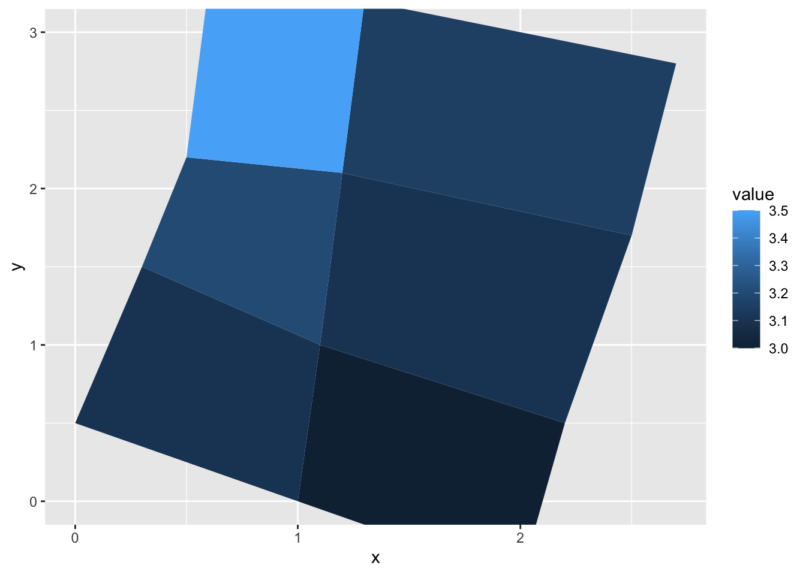

# data manipulation
library(tidyverse)
# spatial data manipulation
library(sf)1 R Fundamentals
This session will introduce the fundamental concepts, principles and tools that we will use during the course. Understanding these components provides the foundation for the rest of the course.
1.1 Learning Objectives
By the end of today’s session you should be able to:
- Be familiar with R, RStudio, Quarto and R programming.
- Handle different data types, including numeric, string and factors.
- Understand how to create and handle non-geographic and geographic data frames.
- Be familiar with common R packages, including the tidyverse and r-spatial ecosystems.
1.2 Plan for the day
| Time | Content |
|---|---|
| 10.00 - 10.15 | Introduction |
| 10.15 - 10.45 | Setting up & interacting with materials |
| 10.45 - 11.30 | R Basics |
| 11.30 - 11.50 | Break |
| 11.50 - 12.50 | Using Quarto documents & Data types |
| 12.50 - 13.30 | Lunch |
| 13.30 - 14.15 | Non-geographic data frames |
| 14.15 - 14.45 | Geographic data frames |
1.3 Dependencies
1.4 Introducing R
R is a freely available language and environment for statistical computing and graphics which provides a wide variety of statistical and graphical techniques. It has gained widespread use in academia and industry. R offers a wider array of functionality than a traditional statistics package, is composed of core (base) functionality, and is expandable through libraries hosted on (The Comprehensive R Archive Network (CRAN))[https://cran.r-project.org]. CRAN is a network of ftp and web servers around the world that store identical, up-to-date, versions of code and documentation for R.
Commands are sent to R using either the terminal / command line or the R Console which is installed with R on either Windows or OS X. On Linux, there is no equivalent of the console, however, third party solutions exist. On your own machine, R can be installed from here.
Normally RStudio is used to implement R coding. RStudio is an integrated development environment (IDE) for R and provides a more user-friendly front-end to R than the front-end provided with R.
To run R or RStudio, just double click on the R or RStudio icon. Throughout this course, we will be using RStudio:
Note
If you would like to know more about the various features of RStudio, watch this video.
1.5 Working directory
Before we start any analysis, ensure to set the path to the directory where we are working. We have two options to do this.
Option 1
Once you have opened R, you can use the command setwd( ) to set the working directory. For example, replace in the following line the path to the folder where you have placed this file and where the data folder lives.
setwd("")You can check your current working directory by typing:
getwd()Option 2
Before opening any files in the folder, open the file with the extension *.Rproj. This is a R project and automatically indexes all the files in the folder and subfolders so there is no need to explicitly set the working directory. You can call any files in the R project folder by replacing the working directory with “.”. For instance, let us open a dataset from our subfolder data:
read_csv("./data")1.6 R scripts and Quarto documents
1.6.1 R script
An R script is a series of commands that you can execute at one time and help you save time. R scripts are useful to ensure reproducibility; that is if you want to repeat the same series of steps with the same or different datasets. An R script is a plain text file with R commands.
Note
To get familiar with good practices in writing your code in R, we recommend the Chapter Workflow: basics and Workflow: scripts and projects from the R in Data Science book by Wickham, Çetinkaya-Rundel, and Grolemund (2023)
To create an R script in RStudio, you need to:
Open a new script file: File > New File > R Script
Write some code on your new script window by typing eg. mtcars
Run the script. Click anywhere on the line of code, then hit Ctrl + Enter (Windows) or Cmd + Enter (Mac) to run the command or select the code chunk and click run on the right-top corner of your script window. If do that, you should get:
mtcars mpg cyl disp hp drat wt qsec vs am gear carb
Mazda RX4 21.0 6 160.0 110 3.90 2.620 16.46 0 1 4 4
Mazda RX4 Wag 21.0 6 160.0 110 3.90 2.875 17.02 0 1 4 4
Datsun 710 22.8 4 108.0 93 3.85 2.320 18.61 1 1 4 1
Hornet 4 Drive 21.4 6 258.0 110 3.08 3.215 19.44 1 0 3 1
Hornet Sportabout 18.7 8 360.0 175 3.15 3.440 17.02 0 0 3 2
Valiant 18.1 6 225.0 105 2.76 3.460 20.22 1 0 3 1
Duster 360 14.3 8 360.0 245 3.21 3.570 15.84 0 0 3 4
Merc 240D 24.4 4 146.7 62 3.69 3.190 20.00 1 0 4 2
Merc 230 22.8 4 140.8 95 3.92 3.150 22.90 1 0 4 2
Merc 280 19.2 6 167.6 123 3.92 3.440 18.30 1 0 4 4
Merc 280C 17.8 6 167.6 123 3.92 3.440 18.90 1 0 4 4
Merc 450SE 16.4 8 275.8 180 3.07 4.070 17.40 0 0 3 3
Merc 450SL 17.3 8 275.8 180 3.07 3.730 17.60 0 0 3 3
Merc 450SLC 15.2 8 275.8 180 3.07 3.780 18.00 0 0 3 3
Cadillac Fleetwood 10.4 8 472.0 205 2.93 5.250 17.98 0 0 3 4
Lincoln Continental 10.4 8 460.0 215 3.00 5.424 17.82 0 0 3 4
Chrysler Imperial 14.7 8 440.0 230 3.23 5.345 17.42 0 0 3 4
Fiat 128 32.4 4 78.7 66 4.08 2.200 19.47 1 1 4 1
Honda Civic 30.4 4 75.7 52 4.93 1.615 18.52 1 1 4 2
Toyota Corolla 33.9 4 71.1 65 4.22 1.835 19.90 1 1 4 1
Toyota Corona 21.5 4 120.1 97 3.70 2.465 20.01 1 0 3 1
Dodge Challenger 15.5 8 318.0 150 2.76 3.520 16.87 0 0 3 2
AMC Javelin 15.2 8 304.0 150 3.15 3.435 17.30 0 0 3 2
Camaro Z28 13.3 8 350.0 245 3.73 3.840 15.41 0 0 3 4
Pontiac Firebird 19.2 8 400.0 175 3.08 3.845 17.05 0 0 3 2
Fiat X1-9 27.3 4 79.0 66 4.08 1.935 18.90 1 1 4 1
Porsche 914-2 26.0 4 120.3 91 4.43 2.140 16.70 0 1 5 2
Lotus Europa 30.4 4 95.1 113 3.77 1.513 16.90 1 1 5 2
Ford Pantera L 15.8 8 351.0 264 4.22 3.170 14.50 0 1 5 4
Ferrari Dino 19.7 6 145.0 175 3.62 2.770 15.50 0 1 5 6
Maserati Bora 15.0 8 301.0 335 3.54 3.570 14.60 0 1 5 8
Volvo 142E 21.4 4 121.0 109 4.11 2.780 18.60 1 1 4 2- Save the script: File > Save As, select your required destination folder, and enter any filename that you like, provided that it ends with the file extension .R
1.6.2 Quarto Document
A Quarto Document is based on Markdown technology. It allows to integrate descriptive text and code chunks. Code chunks can be executed independently and interactively, with output visible immediately beneath a code chunk - see Xie, Allaire, and Grolemund (2018). A Quarto Document is an improved version of the original R Notebook. Quarto Document requires a package called Quarto. Quarto does not have a dependency or requirement for R. Quarto is multilingual, beginning with R, Python, Javascript, and Julia. The concept is that Quarto will work even for languages that do not yet exist.
To create a Quarto Document, you need to:
Open a new script file: File > New File > Quarto Document.
Quarto Documents work in the same way as R Notebooks with small variations. You can find a comprehensive guide on how to use Quarto Documents on the Quarto website.
Now that you are familiar with Quarto, we will explore some basic elements:
YAML options
Code chunks
Preview
Rendering
To master Quarto, please read the Quarto Guide page.
1.6.3 Using quarto documents
Quarto documents are very flexible. They can be rendered into different formats, including pdf, html and doc files. They can be used to product reports, articles, briefs, websites, books and more. We can explore how this can be done using some of the templates we have produced and are hosted on our personal Github repository.
Let us explore the use of Quarto documents by downloading the repository above and examine the various templates available.
1.7 Help
You can use help or ? to ask for details for a specific function:
help(sqrt) #or ?sqrtAnd using example provides examples for said function:
example(geom_map)
gem_mp> # First, a made-up example containing a few polygons, to explain
gem_mp> # how `geom_map()` works. It requires two data frames:
gem_mp> # One contains the coordinates of each polygon (`positions`), and is
gem_mp> # provided via the `map` argument. The other contains the
gem_mp> # other the values associated with each polygon (`values`). An id
gem_mp> # variable links the two together.
gem_mp>
gem_mp> ids <- factor(c("1.1", "2.1", "1.2", "2.2", "1.3", "2.3"))
gem_mp> values <- data.frame(
gem_mp+ id = ids,
gem_mp+ value = c(3, 3.1, 3.1, 3.2, 3.15, 3.5)
gem_mp+ )
gem_mp> positions <- data.frame(
gem_mp+ id = rep(ids, each = 4),
gem_mp+ x = c(2, 1, 1.1, 2.2, 1, 0, 0.3, 1.1, 2.2, 1.1, 1.2, 2.5, 1.1, 0.3,
gem_mp+ 0.5, 1.2, 2.5, 1.2, 1.3, 2.7, 1.2, 0.5, 0.6, 1.3),
gem_mp+ y = c(-0.5, 0, 1, 0.5, 0, 0.5, 1.5, 1, 0.5, 1, 2.1, 1.7, 1, 1.5,
gem_mp+ 2.2, 2.1, 1.7, 2.1, 3.2, 2.8, 2.1, 2.2, 3.3, 3.2)
gem_mp+ )
gem_mp> ggplot(values) +
gem_mp+ geom_map(aes(map_id = id), map = positions) +
gem_mp+ expand_limits(positions)
gem_mp> ggplot(values, aes(fill = value)) +
gem_mp+ geom_map(aes(map_id = id), map = positions) +
gem_mp+ expand_limits(positions)
gem_mp> ggplot(values, aes(fill = value)) +
gem_mp+ geom_map(aes(map_id = id), map = positions) +
gem_mp+ expand_limits(positions) + ylim(0, 3)
gem_mp> # Now some examples with real maps
gem_mp> if (require(maps)) {
gem_mp+
gem_mp+ crimes <- data.frame(state = tolower(rownames(USArrests)), USArrests)
gem_mp+
gem_mp+ # Equivalent to crimes %>% tidyr::pivot_longer(Murder:Rape)
gem_mp+ vars <- lapply(names(crimes)[-1], function(j) {
gem_mp+ data.frame(state = crimes$state, variable = j, value = crimes[[j]])
gem_mp+ })
gem_mp+ crimes_long <- do.call("rbind", vars)
gem_mp+
gem_mp+ states_map <- map_data("state")
gem_mp+
gem_mp+ # without geospatial coordinate system, the resulting plot
gem_mp+ # looks weird
gem_mp+ ggplot(crimes, aes(map_id = state)) +
gem_mp+ geom_map(aes(fill = Murder), map = states_map) +
gem_mp+ expand_limits(x = states_map$long, y = states_map$lat)
gem_mp+
gem_mp+ # in combination with `coord_sf()` we get an appropriate result
gem_mp+ ggplot(crimes, aes(map_id = state)) +
gem_mp+ geom_map(aes(fill = Murder), map = states_map) +
gem_mp+ # crs = 5070 is a Conus Albers projection for North America,
gem_mp+ # see: https://epsg.io/5070
gem_mp+ # default_crs = 4326 tells coord_sf() that the input map data
gem_mp+ # are in longitude-latitude format
gem_mp+ coord_sf(
gem_mp+ crs = 5070, default_crs = 4326,
gem_mp+ xlim = c(-125, -70), ylim = c(25, 52)
gem_mp+ )
gem_mp+
gem_mp+ ggplot(crimes_long, aes(map_id = state)) +
gem_mp+ geom_map(aes(fill = value), map = states_map) +
gem_mp+ coord_sf(
gem_mp+ crs = 5070, default_crs = 4326,
gem_mp+ xlim = c(-125, -70), ylim = c(25, 52)
gem_mp+ ) +
gem_mp+ facet_wrap(~variable)
gem_mp+ }
1.8 R data types
There are a number of data types. Four are the most common. In R, numeric is the default type for numbers. It stores all numbers as floating-point numbers (numbers with decimals). This is because most statistical calculations deal with numbers with up to two decimals.
Numeric
num <- 4.5 # Decimal values
class(num)[1] "numeric"Integer
int <- as.integer(4) # Natural numbers. Note integers are also numerics.
class(int)[1] "integer"Character
cha <- "are you enjoying this?" # text or string. You can also type `as.character("are you enjoying this?")`
class(cha)[1] "character"Logical
log <- 2 < 1 # assigns TRUE or FALSE. In this case, FALSE as 2 is greater than 1
log[1] FALSEclass(log)[1] "logical"You can create vectors by concatenating elements:
data_vector <- c(2, 3, 4, 5, 6)
data_vector[1] 2 3 4 5 61.8.1 Factors
A factor variable assigns a numeric code to each possible category (level) in a variable. Behind the scenes, R stores the variable using these numeric codes to save space and speed up computing. For example, compare the size of a list of 10,000 males and females to a list of 10,000 1s and 0s. At the same time R also saves the category names associated with each numeric code (level). These are used for display purposes.
For example, the variable gender, converted to a factor, would be stored as a series of 1s and 2s, where 1 = female and 2 = male; but would be displayed in all outputs using their category labels of female and male.
Defining a factor
A factor can be defined by first creating a numeric or character vector; for example:
gender <- c("female", "male", "male", "female", "female") # create a gender variable
gender <- factor(gender) # replace character vector with a factor version
gender[1] female male male female female
Levels: female male1.9 Data frames
1.9.1 Non-geographic data frames
Reading data frames
Creating data frames
Referencing data frames
Manipulating data frames
tidyverse
1.9.2 Geographic data frames
Reading geographic data frames
Manipulating geographic data frames